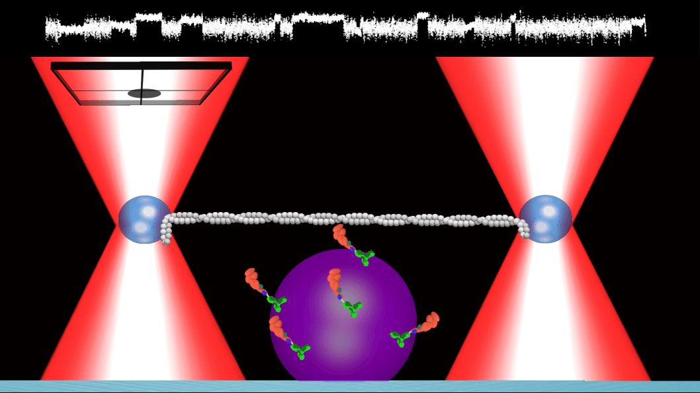

What is the relative timing between myosin’s powerstroke and Pi-release?
Dissertation of Brent Scott
Welcome - This is the online version of my dissertation and allows me to use way cooler HTML based tools to showcase our lab’s work…
Like this GIF!
